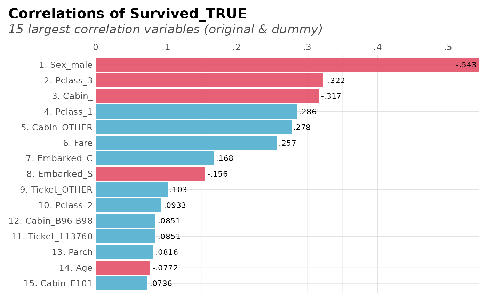
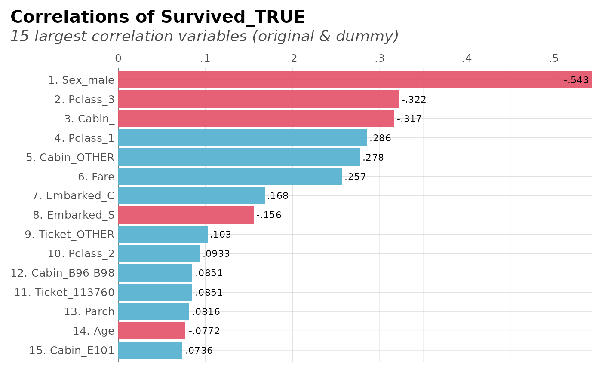

This function correlates a whole dataframe with a single feature. It
automatically runs ohse (one-hot-smart-encoding) so no need to input
only numerical values.
Usage
corr_var(
df,
var,
ignore = NULL,
trim = 0,
clean = FALSE,
plot = TRUE,
top = NA,
ceiling = 1,
max_pvalue = 1,
limit = 10,
ranks = FALSE,
zeroes = FALSE,
save = FALSE,
quiet = FALSE,
...
)
# S3 method for corr_var
plot(x, var, max_pvalue = 1, top = NA, limit = NULL, ...)Arguments
- df
Dataframe. It doesn't matter if it's got non-numerical columns: they will be filtered.
- var
Variable. Name of the variable to correlate. Note that if the variable
varis not numerical, 1. you may define which category to select from using `var_category`; 2. You may have to addredundant = TRUEto enable all categories (instead ofn-1).- ignore
Character vector. Which columns do you wish to exclude?
- trim
Integer. Trim words until the nth character for categorical values (applies for both, target and values)
- clean
Boolean. Use lares::cleanText for categorical values (applies for both, target and values)
- plot
Boolean. Do you wish to plot the result? If set to TRUE, the function will return only the plot and not the result's data
- top
Integer. If you want to plot the top correlations, define how many
- ceiling
Numeric. Remove all correlations above... Range: (0-1]
- max_pvalue
Numeric. Filter non-significant variables. Range (0, 1]
- limit
Integer. Limit one hot encoding to the n most frequent values of each column. Set to
NAto ignore argument.- ranks
Boolean. Add ranking numbers?
- zeroes
Do you wish to keep zeroes in correlations too?
- save
Boolean. Save output plot into working directory
- quiet
Boolean. Keep quiet? If not, show messages
- ...
Additional parameters passed to
corrandcor.test- x
corr_var object
Value
data.frame. With variables, correlation and p-value results for each feature, arranged by descending absolute correlation value.
See also
Other Exploratory:
corr_cross(),
crosstab(),
df_str(),
distr(),
freqs_df(),
freqs_list(),
freqs_plot(),
freqs(),
lasso_vars(),
missingness(),
plot_cats(),
plot_df(),
plot_nums(),
tree_var()
Other Correlations:
corr_cross(),
corr()
Examples
Sys.unsetenv("LARES_FONT") # Temporal
data(dft) # Titanic dataset
corr_var(dft, Survived, method = "spearman", plot = FALSE, top = 10)
#> Warning: Not a valid input: Survived was transformed or does not exist.
#> >> Automatically using 'Survived_TRUE'
#> # A tibble: 10 × 3
#> variables corr pvalue
#> <chr> <dbl> <dbl>
#> 1 Sex_male -0.543 1.41e-69
#> 2 Fare 0.324 3.47e-23
#> 3 Pclass_3 -0.322 5.51e-23
#> 4 Cabin_ -0.317 3.09e-22
#> 5 Pclass_1 0.286 3.19e-18
#> 6 Cabin_OTHER 0.278 2.95e-17
#> 7 Embarked_C 0.168 4.40e- 7
#> 8 Embarked_S -0.156 3.04e- 6
#> 9 Parch 0.138 3.45e- 5
#> 10 Ticket_OTHER 0.103 2.17e- 3
# With plots, results are easier to compare:
# Correlate Survived with everything else and show only significant results
dft %>% corr_var(Survived_TRUE, max_pvalue = 0.05)
 # Top 15 with less than 50% correlation and show ranks
dft %>% corr_var(Survived_TRUE, ceiling = .6, top = 15, ranks = TRUE)
#> Removing all correlations greater than 60% (absolute)

# Top 15 with less than 50% correlation and show ranks
dft %>% corr_var(Survived_TRUE, ceiling = .6, top = 15, ranks = TRUE)
#> Removing all correlations greater than 60% (absolute)
